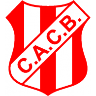

|  |
Club Costa Brava |
| Inicio | Club Atlético y Cultural Argentino | Pico Fútbol Club | Sportivo Independiente | Costa Brava | Ferro Carril Oeste |
Costa Brava fue fundado en 1935 y ha sido un club que fomenta la participación deportiva en General Pico. Con una fuerte tradición en el fútbol, es conocido por su formación de jugadores locales.
| Instalación | Descripción |
|---|---|
| Estadio | Césped natural, capacidad para 8,000 personas. |
| Centro de entrenamientos | Moderno centro para diversas disciplinas deportivas. |
| © 2024 Costa Brava. Todos los derechos reservados. |